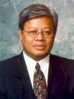

Stay current with REEF's projects and events. We pledge to honor your privacy and send only relevant notices. Sign up here.
CEO, President & Founder
Ralph Chesley was born in Manila, Philippines and raised in Candelaria, Zambales until the age of 12. Ralph returned after 38 years in 2003 to find living conditions remained at subsistence farming. He sought to make a change, and five years later formed REEF a 501(c)3 public charity, non-profit international tax-exempt organization. Its mission to use renewable energy technologies to alleviate poverty focuses on health care, solar systems for poor families, education, and career development in the renewable energy industry.
Prior to REEF, Ralph designed solar systems and presented environmental and economic cost benefit analysis on solar PV systems. With 25 years in the energy industry, Ralph worked in the utility power industry, both in fossil and nuclear power plants, assisting Fortune 500 utilities in the western United States and Canada improve plant efficiencies. As a registered energy auditor with CEC, home owners and small business owners benefited from his energy efficiency recommendations. His passion for energy conservation includes passive heating and cooling designs for buildings.
As President and CEO, Ralph is responsible for the success of REEF’s mission. He oversees the daily operations while developing new programs to broaden its reach to serve the poor. He travels annually to the Philippines to seek endorsements from government aid agencies and provincial government officials to lend their support to advance REEF’s programs to alleviate poverty in their districts.
Ralph serves on the Board of Directors for The Candelarians, an association of ex-pats from his home town, and is a member on the advisory board for the Center for Filipino Studies under the auspices of California State University, East Bay, directed by Efren Padilla, PhD. REEF is a registered corporation with the State of California and identified by the US Internal Revenue Service as owning its tax-exempt status. Ralph earned his BA in Environmental Studies from University of Santa Cruz, California. A frequent visitor to Foundation Center, San Francisco, he attends classes on the advancement of non-profit management.
Chairman of the Board
 SHRIKANT LOHOKARE Ph.D.
SHRIKANT LOHOKARE Ph.D.
Shrikant Lohokare is founder and CEO of E-Cubed Ventures, an innovation, venture acceleration and strategy firm. He is a technology executive, serial entrepreneur, and venture capitalist with 20+ years of leadership experience in innovation, corporate strategy and business development at Fortune 500 corporations, and startup ventures. Prior to founding E-Cubed Ventures, Shrikant was Principal Partner at 21 Ventures, an early stage venture capital fund with $300M under management where he led several investments in cleantech, semiconductors, and IT. He was also CEO of NanoSilicon, a portfolio venture in nanotechnology. Shrikant held senior management positions in the high tech industry heading new products, global marketing, and business development first at Lam Research Corporation and later at KLA-Tencor Corporation.
Shrikant has deep interest in accelerating cross-cutting, disruptive innovations and ventures in emerging themes especially those offering significant triple bottom-line impact. He has served as board director or advisor for various technology and social ventures as well as non-profits to that effect and is passionate about helping social and non-profit enterprises in healthcare, environment, and education. Shrikant is an ecosystems thinker and creative thought leader with an ability to catalyze collaborations, and strategic development. He is often invited as speaker/ panelist at innovation, entrepreneurship and venture events.
Shrikant has a doctorate in physics from University of Illinois at Urbana-Champaign, an integrated master’s degree in chemical technology from Indian Institute of Technology and executive education in finance and strategy from Stanford University. He has authored several scientific papers, and has been granted 12 US patents.
Detailed profile at www.linkedin.com/in/shrikantlohokare/
Treasurer
Richard Lehman is Vice President in the Wealth Management group at Mechanics Bank in Richmond, California and an Instructor of both Finance and Derivatives at UC Berkeley Extension in his spare time. His financial career spans more than thirty years in Product Management, Marketing and Investment Management beginning with an eleven year stint on Wall Street with EF Hutton, Thomson McKinnon and the New York Stock Exchange.
Lehman’s role while on the Board is to advise on financial matters, investigate and secure corporate partnerships among the financial institutions, and assist with the creation of REEF’s endowment program by seeking benefactors with interests in alleviating poverty through the transfer of renewable energy.
Lehman has written two books. The first, with coauthor Lawrence McMillan, was New Insights on Covered Call Writing – The Powerful Technique that Lowers Risk and Enhances Returns in Stock Investing. The second is Far From Random – Using Investor Behavior and Trend Analysis to Forecast Market Movement.
Lehman holds a BS in Management Engineering from Rensselaer Polytechnic Institute in Troy New York and an MBA from the State University of New York at Albany.
Secretary
Michelle Sanchez was born in Los Angeles to immigrant parents from the Philippines – Quezon City (mother) and Bicol Region (father). With her family based in Fresno, California, Michelle moved to Bay Area in 2011 to continue a career in professional sports, which has spanned 10 years.
While attending CSU, Fresno, Michelle studied mass communication & journalism with a focus in public relations. After graduation, Michelle started a successful marketing career in professional sports working for the Fresno Grizzlies (AAA Affiliate to the San Francisco Giants), Spurs Sports & Entertainment, which included teams like the NBA’s Spurs and the WNBA’s Silver Stars, and the Golden State Warriors.
Michelle focused her career in corporate sponsorships and developed marketing campaigns for companies like AT&T, Coca-Cola, Kia Motors USA, and dozens of others who have chosen to advertise in professional sports. Michelle’s most notable experience was working with AT&T to develop a mobile marketing platform that changed the way fans interacted with their favorite players, teams and advertisers.
In her first year as Board Secretary, Michelle will work on creating, developing and managing REEF’s corporate sponsor program. As REEF’s outreach continues to grow to help families throughout the Philippines and projected growth into India, securing support from corporate sponsors will be vital.
Director of India Chapter
Manimala Kumar is a Project Manager at a software company in Silicon Valley. In more than a decade long software career she has been involved into engineering, consulting, management and leading large teams across diverse industries spanning from finance, railway transport, automobile and advertising to utilities.
She grew up in India. Being in a college nestled in majestic Himalayas enrooted her with nature. Working on smart grid software triggered her interest in energy technologies. She is aware of poverty, gender discrimination and lack of sustainability movement in developing countries. And she wants to combat by employing engineered tools.
While on the board, Manimala will spearhead REEF’s India chapter and alliance programs from ground zero. She will also continue to lead REEF’s online marketing team.
Manimala has done post-graduation in Information Technology from Indian Institute of Technology, Kharagpur and B.E. in Electrical Engineering from Government Engineering College, Jalpaiguri, India.
Director of Community Affairs
Rodney Delos Angeles was born and raised to native parents from the town of Candelaria, Zambales Philippines. His family migrated to the US when he was 15 years old and has been living in the Bay Area ever since.
Rodney Delos Angeles is a Sr. Production Planner for NVIDIA, manufacturer of GForce, the leading graphic microprocessor. He has extensive experience in Supply Chain management, working in various high tech Silicon Valley companies. Furthermore, he believes that clean/green technology has a profound impact not just on the environment but also on building and enriching people’s lives in many aspects such as eradicating poverty. It is one of the many reasons he is avidly involved with REEF and wanted to ensure its vision will be fulfilled.
Rodney’s Board duties include Director of REEF’s Community Outreach Program. He is entrusted to create a program to engage all interested individuals to join REEF’s mission either as a volunteer and/or donor. Don’t be surprised when you receive a call from him. Finally, Rodney will lead a team of volunteers focused on expanding our community outreach, engaged community and civic organizations to support REEF in reaching families too poor to afford electricity.
Rodney received a BS in Industrial Psychology from Cal State EastBay in Hayward, CA and MBA in Technology Management from University of Phoenix.
General Members
Ricky Ablaza is an experienced listing and selling Real Estate Broker working in the Greater Bay Area, California. For the past 13 years he successfully managed the homes of countless buyers and sellers to the closing table.
Ricky is also experienced in alternative solutions to the foreclosure process. He has a team of lawyers to handle bankruptcy, deed in lieu and loan modification. His expertise in closing short sales has brought relief to many troubled homeowners.
Ricky has lived with his wife and children in Milpitas CA since 1998. He is a Commissioner for the Economic Development Commission of the City of Milpitas. He is an avid Golfer, is a singer in a retro band, volunteers with socio-civic organizations involved with Neo Humanism, Progressive Utilization Theory and in the study of Microvita.
Past Board Members
Larry Asera is an internationally noted engineer, entrepreneur, and educator known for his creative initiatives and projects that have changed U.S. public policy in the renewable energy industry over the last two decades. He has also been recognized for his many years of voluntary service as an elected and appointed official and as a member of numerous local and national community foundation boards.
A pioneer in the development of photovoltaic technology, Mr. Asera is well-known for helping to bring electricity to the poorest areas in the world. His corporate logo--“solarizing the globe . . . one village at a time”--has brought solar electricity in the rural areas of the Philippines for housing, water pumping and health facilities.
Mr. Asera’s role on the REEF Board of Directors will be in the area of technology transfer, project management and liaise with government contacts here in California and Philippine government and solar manufacturers. He assists with curriculum development and certification for the Leaders in Education And Development Sustainability program.
Norris Tongson has more than 12 years experience in the manufacturing and semiconductor industry. He is currently the Senior Supply Chain Manager at Applied Materials responsible for global strategic sourcing of semiconductor equipment.
As a Board member, Mr. Tongson will manage the supply chain and logistics initiatives of REEF's international solar projects. In addition, Mr. Tongson co-manageed the Community Outreach fundraising campaign with Mr. Rodney Delos Angeles. Together they will build an in-house infrastructure needed to carry out REEF’s international campaign efforts targeting Filipino-American corporations and organizations to support REEF’s mission.
As part of his community involvement, Mr. Tongson is currently serving as St. Bede’s Elementary School Board Member; Officer for Santa Cruz, Zambales, Northern California Association; member of the Center for Filipino Studies at CSUEB; and is the Chair for Hayward Chapter of National Federation of Filipino Americans Association. Mr. Tongson was past officer for Society of Manufacturing Engineer and the American Society of Agricultural Engineers; and, co-founded the Ohlone College Filipino-American Student Alliance.
Mr.Tongson earned his Master of Business Administration from Keller Graduate School of Management, DeVry University. He is an officer of ANC Food Services, LLC a franchisee for La Salsa Fresh Mexican Grill in Hayward, CA; he also earned his Bachelor of Science for Bio-Resource and Agriculture Engineering from California Polytechnic University, San Luis Obispo.
Nicholas Rogers currently practices complex securities and shareholder derivative litigation in San Francisco. In the past he has also provided pro bono legal services through the San Francisco Bar Association's Volunteer Legal Services Program and worked on various charitable, environmental/energy and political projects. Before that Mr. Rogers was with the office of the City Attorney for the City of San Francisco.
To continue his interest in energy issues, Mr. Rogers will investigate power purchase agreements (PPA) contracts and cap and trade mechanisms whereby creating opportunities of new revenue streams. In addition, Mr. Rogers will lead efforts to register REEF as an NGO with governments to ensure eligibility to participate in foreign aid grant programs.
Nicholas A. Rogers received his Bachelor of Arts degree in Political Science with a minor in History from the University of California at Santa Barbara. He received his Juris Doctor degree from Golden Gate University School of Law. Mr. Rogers is admitted to the California Bar and is licensed to practice in all California State Courts.